Rivanna 3 Brakes & Steering
I led an 11-person team through a complete redesign of the braking and steering systems on Rivanna 3, the UVA Solar Car Team's car. Spring-retracted floating calipers and custom drilled 4130 steel rotors eliminated brake drag, and new steering arms corrected the car's steering geometry to true Ackermann. A new steering column with a quick-release hub is being integrated now.
- My role
- Brakes & Steering Lead
- Rotor weight
- −40%
- Stopping distance
- 36% shorter
- Front wheel efficiency
- +82% (est.)

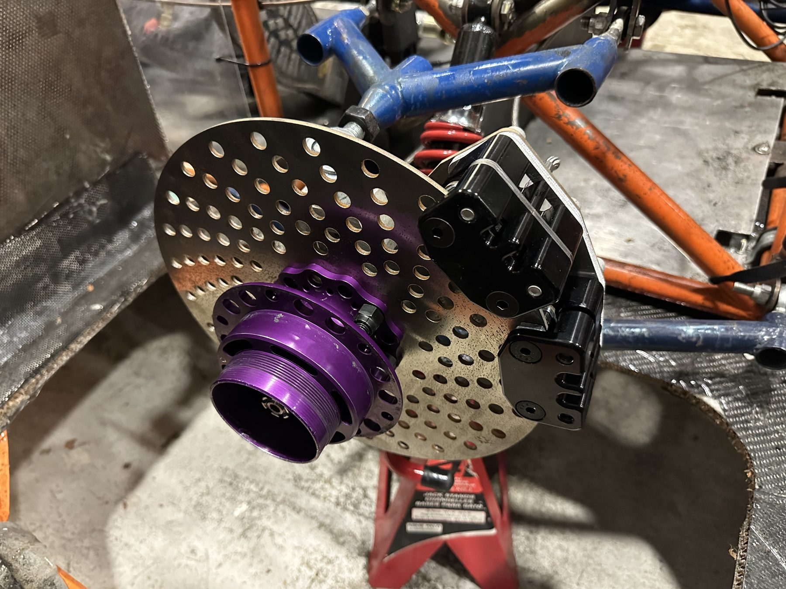

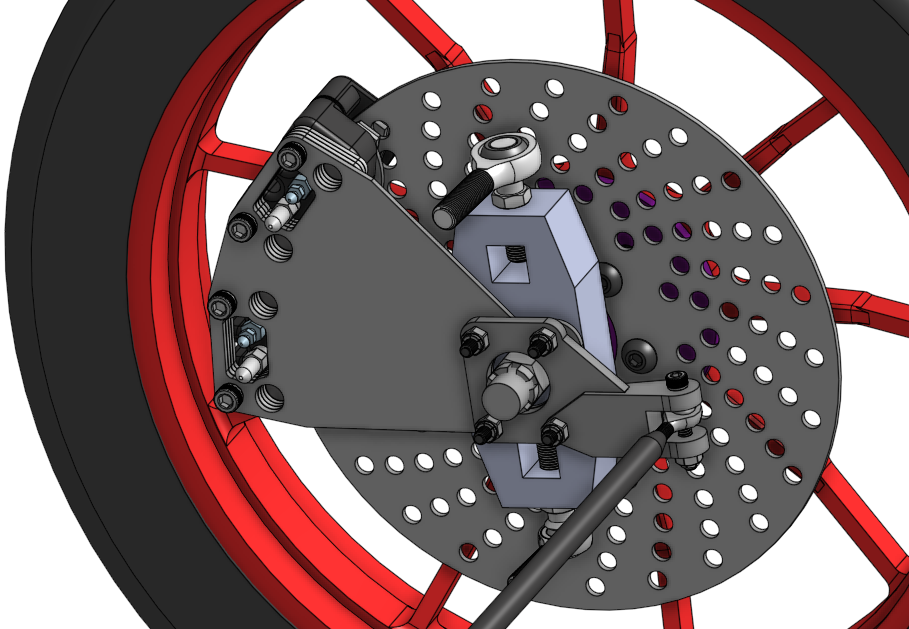
The full system
Onshape animation of the front brakes and steering, from the steering wheel to the wheels.
The problem
In solar car racing at the Formula Sun Grand Prix and the American Solar Challenge (ASC), every watt matters. Energy lost to friction is energy the car can't use to drive. Rivanna 3's front brakes and steering were costing a lot of it.
- Brake drag: Each front wheel had a Wilwood PS-1 caliper for the main brakes and a second one for the hydraulic handbrake. The only thing pulling their pistons back was the square-cut piston seals, which isn't enough. Over time the pads stayed clamped against the rotors even with the brake pedal released, creating large parasitic losses.
- Oversized rotors: The rotors were 12″ in diameter and 3/16″ thick, more than the car needed even with most of the braking done at the front. Front-rear balance is set with a bias bar between the two master cylinders.
- Steering geometry: The steering was over-Ackermanned: the inside wheel turned too far relative to the outside wheel, scrubbing the front tires through turns.
The new system had to meet ASC rules for braking performance and turning radius, and be quick to work on at the track.
What I did
As Brakes & Steering Lead and a member of the team's executive committee, I run an 11-person subteam and manage its design projects. For this redesign, I oversaw all of the work. I researched and selected the calipers, did the braking calculations, and ran the structural analysis myself, and I led the development of every new part, revising the designs for manufacturability along the way.
Calipers
I researched a wide range of calipers and how they retract their pads, and chose MCP650EP floating calipers with active spring retraction. Stiff springs pull the pads off the rotor the moment the brake pedal is released, so the wheels spin with no brake drag.
Rotors
Instead of buying off-the-shelf rotors, we designed custom ones. I sized them with braking calculations to make sure the car would easily meet ASC braking performance requirements. They're cut from 4130 steel, 11″ in diameter and 1/8″ thick, and drilled with a pattern of holes that saves weight, improves cooling, and helps them resist warping from heat. We waterjet-cut them in-house.
The new rotors are 40% lighter than the old ones. Because they spin and sit outside the suspension, that saving also cuts the car's rotational inertia and unsprung mass.

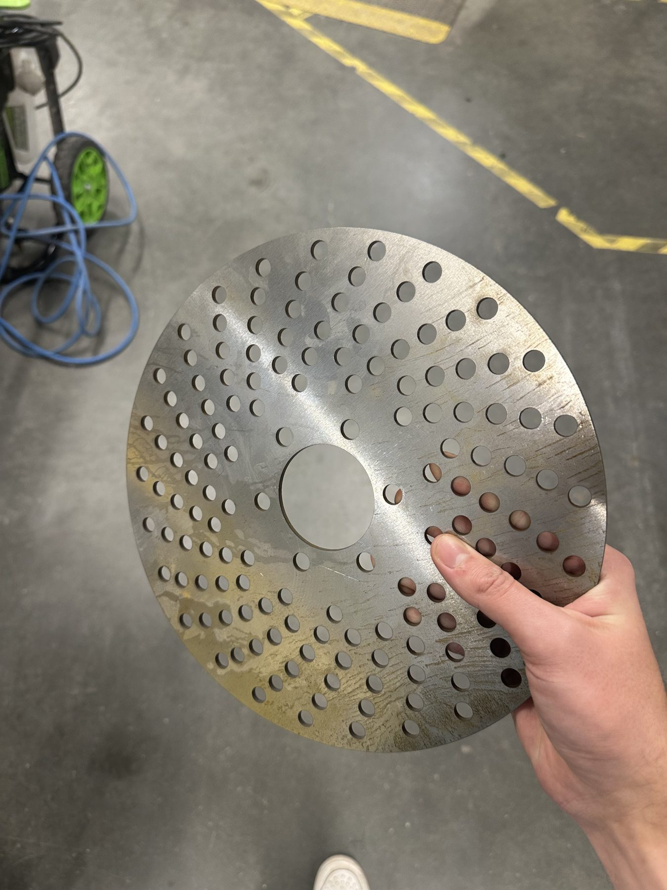

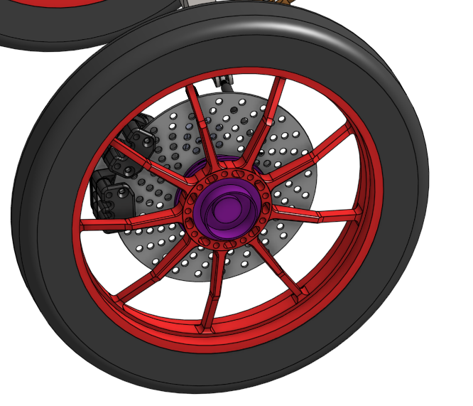

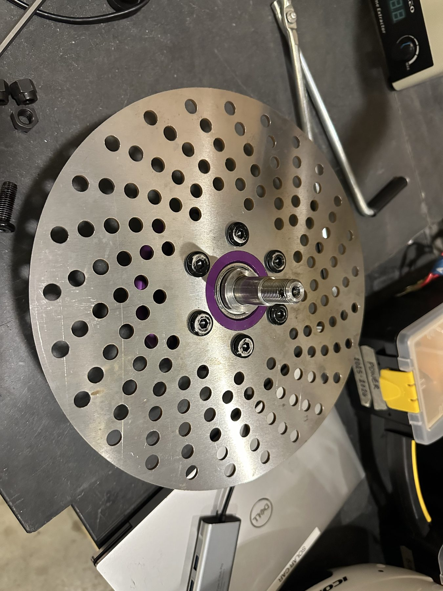

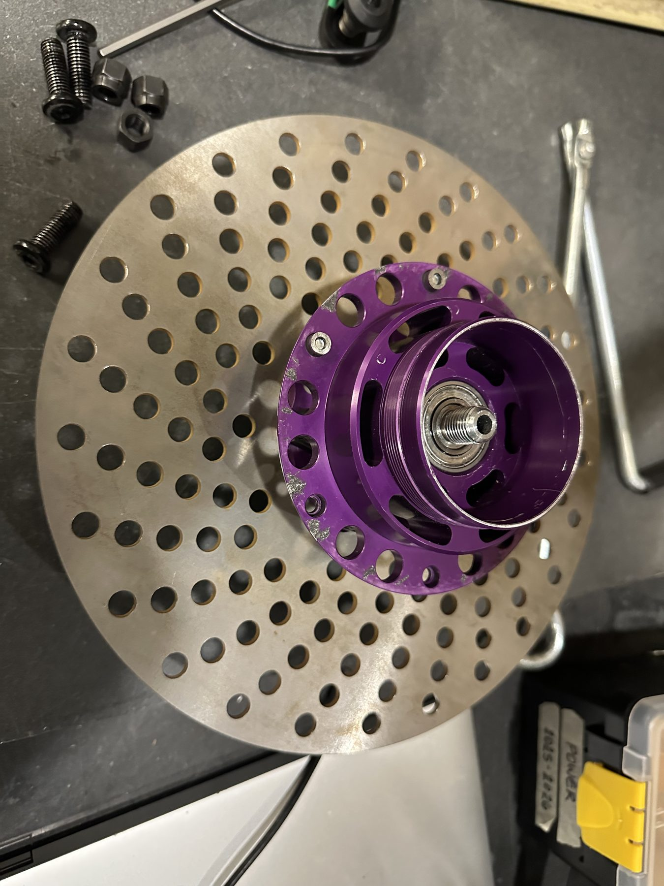
Caliper mounting
New mounting plates attach the calipers to the uprights, designed to be waterjet-cut from the remaining 4130 steel. Custom 1/16″ aluminum spacers, also waterjet-cut, support the entire caliper body so the pads can't tilt against the rotor. OEM shims on the pads set the pad clearance.

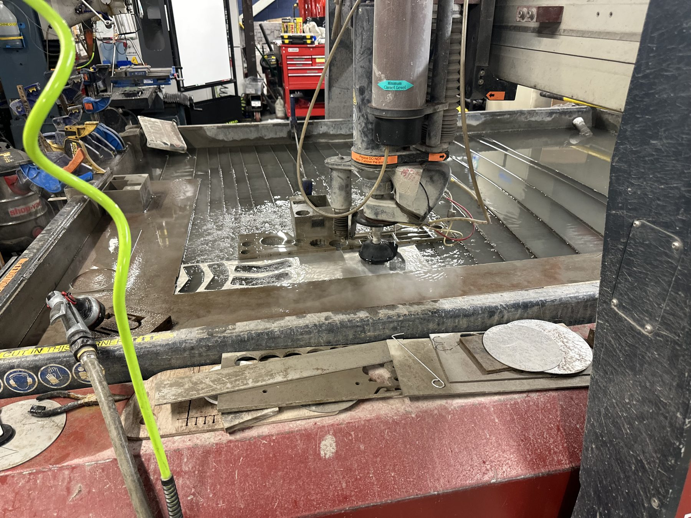
Steering geometry
My team worked out the steering geometry and designed new steering arms that give true Ackermann steering, where both front wheels turn around the same center point, while meeting the ASC turning radius requirement. The tie rods are adjustable in length for fine alignment. They attach to the steering arms with 1/4″-20 bolts, and four more 1/4″-20 bolts mount all of the plates to each upright, all with flex-top, corrosion-resistant lock nuts.

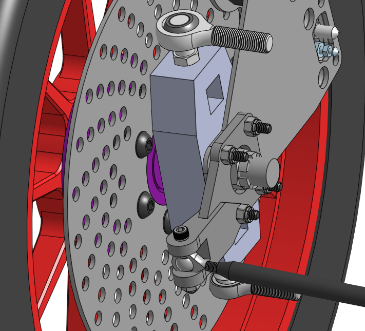
Steering column and quick release In progress
The steering column is being rebuilt around a Zestek SCX quick release, which I selected. It connects and disconnects the steering wheel mechanically and electrically in one motion, making it much faster for the driver to get out of the car. It's also highly wear-resistant and has no rotational or axial play, which makes the steering more precise. Its pogo-pin electrical contacts support CAN bus, so every electrical connection to the wheel runs through the hub, which simplifies the wiring.
The car keeps the steering wheel I designed and built earlier, with one change: a new 1/8″ aluminum back plate with waterjet-cut holes to mount the quick release.
- Shaft: a lightweight 1″ steel tube with a 1/16″ wall. The wheel's cable runs down the middle of the tube so it can't get tangled.
- Quick release mounting: a 1/8″ steel disc is face-welded square to the end of the shaft to mount one half of the quick release. Both halves attach with M5×0.8, 20 mm socket head bolts and flex-top, corrosion-resistant lock nuts.
- Support bearing: the shaft runs through a 1″ self-aligning swivel bearing, clamped between the plates of a support welded to the chassis crossbar with two steel tubes in a V. The bearing mainly absorbs small angular misalignment between the support and the U-joint and rack. It also keeps some of the driver's loads on the shaft from reaching the U-joint.
- Drive to the rack: a welded steel reducing collar at the end of the tube steps down to a welded 3/4″-20 splined adapter. That connects to a U-joint, which drives a Sweet Mfg. Micro Sprint rack and pinion (5.25″ of rack travel per turn) through its 5/8″-36 spline.

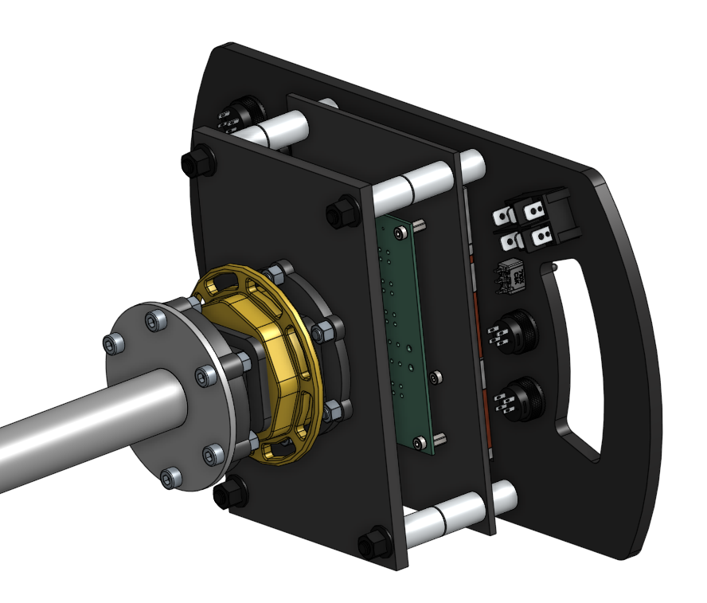

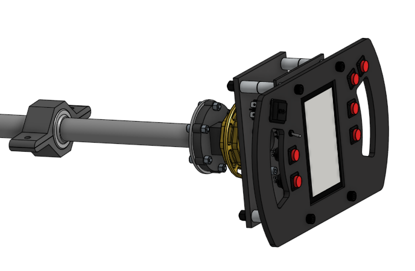

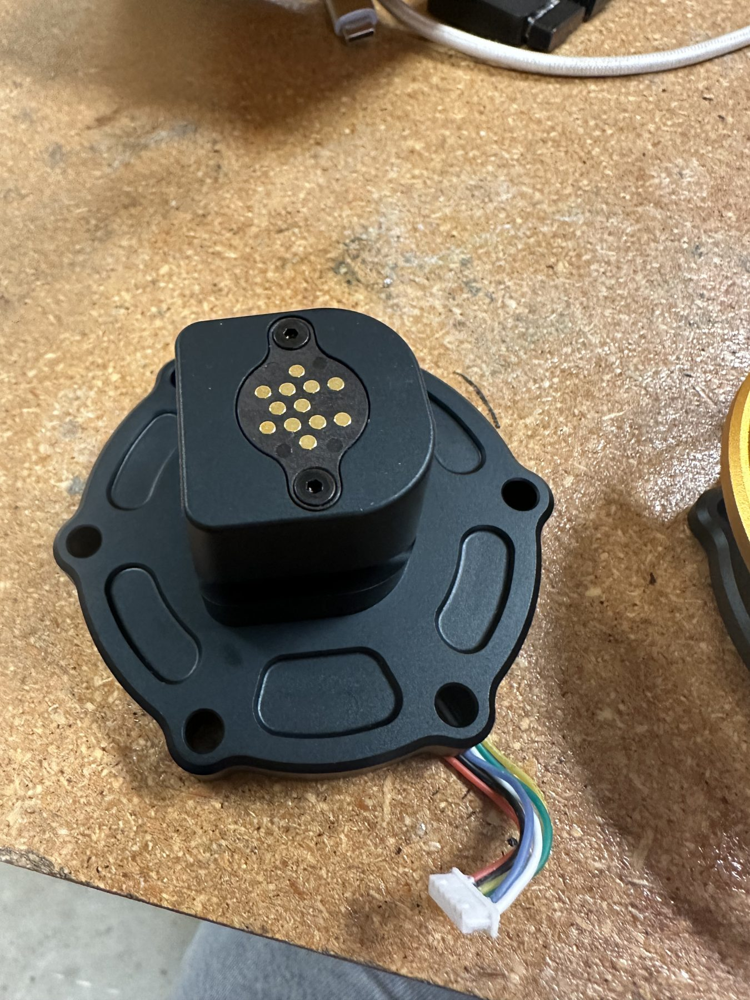

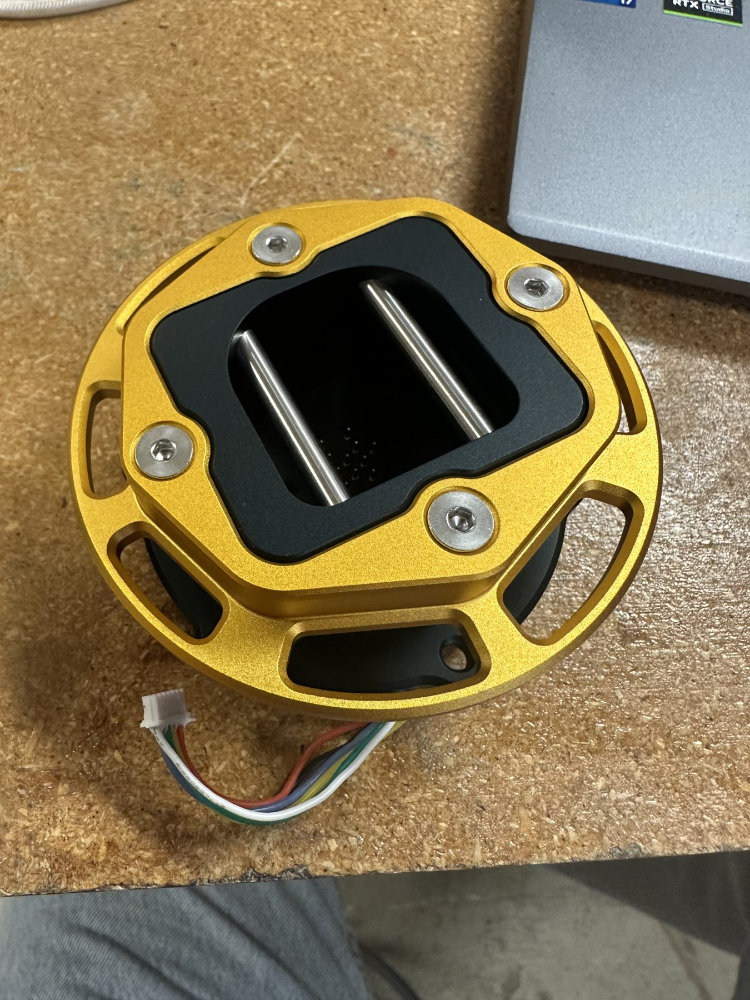

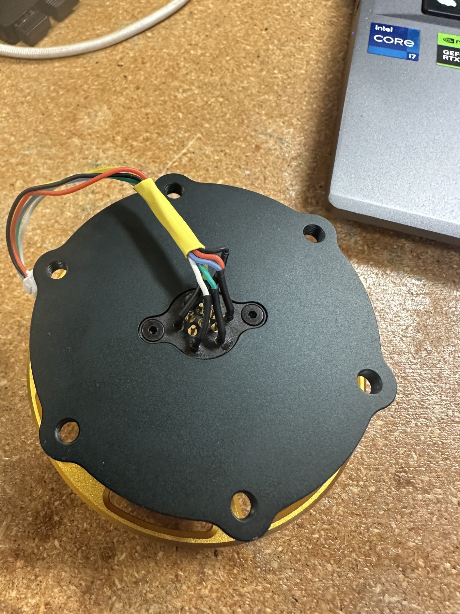

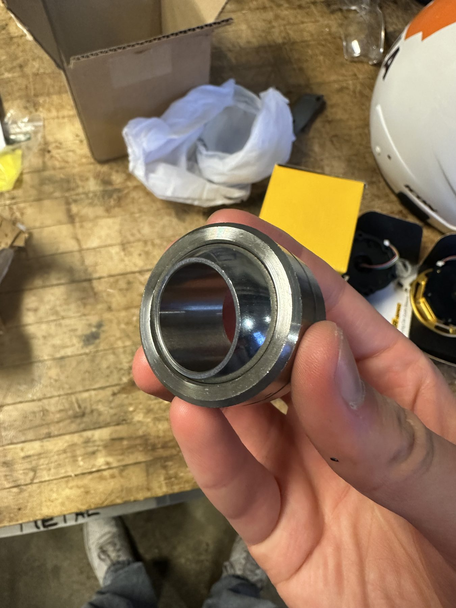
Prototyping and iteration
Before committing to metal, I 3D-printed every new part to test-fit it on the car and iterate on the design. The caliper mounting plates alone went through 71 logged versions in Onshape before the final design was waterjet-cut from steel.

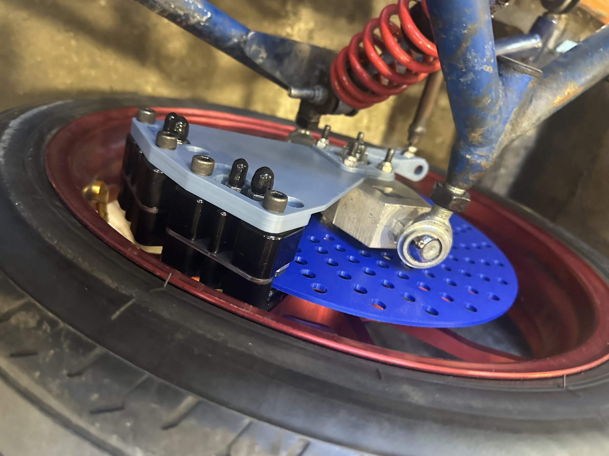

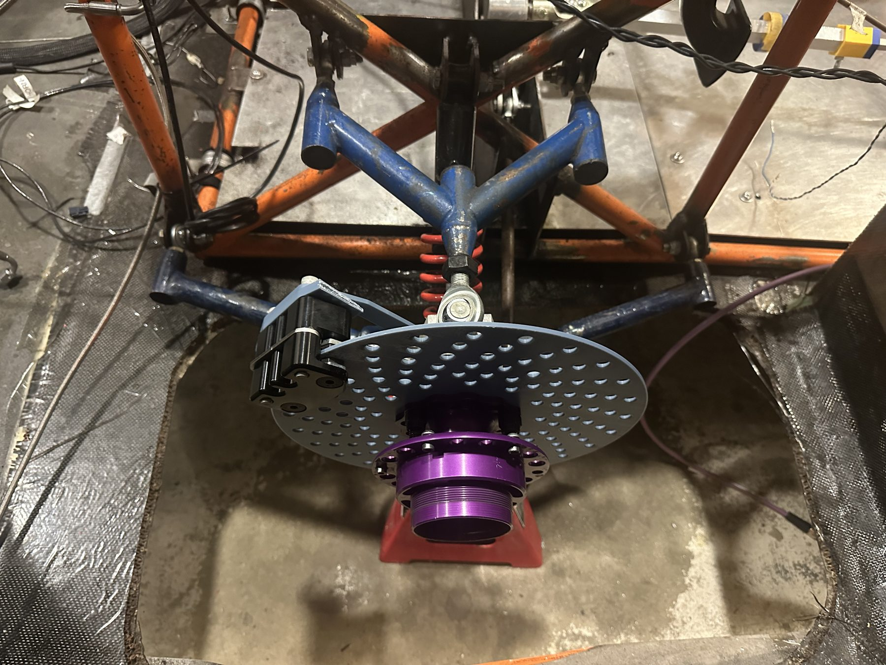
Structural analysis
I ran finite element analysis (FEA) on the steering arms and caliper mounting plates, first in Onshape and then in more detail in Ansys Mechanical, to confirm they would carry their loads without bending.
Designed for service
Every part was designed so it can come off without removing other parts first:
- Pad clearance is adjusted with shims without taking anything off the car.
- Pads can be swapped without removing anything from the car, by loosening two bolts with a single hex key.
- The steering arms come off without touching any of the brake components.
Results
After bleeding both the main brakes and the handbrake, we tested the system with hard downhill driving. It performed better than expected:
- 36% shorter stopping distance.
- Exceeds ASC braking performance requirements. Official scrutineering happens at the race next summer.
- No brake drag: the wheels spin freely whenever the brake pedal is released.
- Rotors 40% lighter, reducing weight, unsprung mass, and rotational inertia.
- Front wheel assemblies an estimated 82% more mechanically efficient, mostly from eliminating brake drag, with the rest from lower weight and rotational inertia.